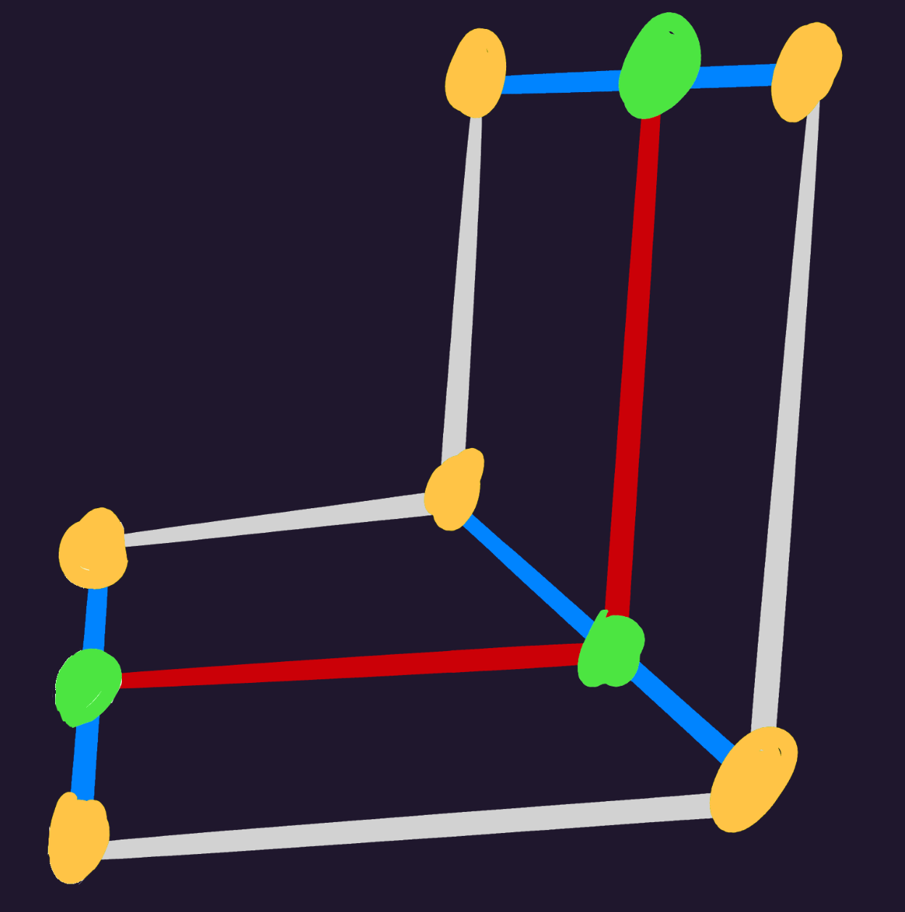

How To Read This
This is a developer-focused document for developing SkelForm runtimes.
This document is written under the assumption that a general-use runtime will be made and accounts for all features and cases, but need not be followed this way for personal runtimes.
Runtime APIs
Both generic and runtime sections are based on their public-facing API functions.
The functions within their sections need not be implemented, and simply exist to split their respective algorithms to be more easily digestible.
Example
All general-use generic runtimes must have an Animate() function that works as
intended (interpolates bones & resets them if needed).
The Animate() function’s implementation is covered in its own section, and the
functions within do not need to be public nor even implemented. All that matters
is Animate() working as intended.
Pseudo Code
All code shown on this document is not meant to be run directly.
The language used is Typescript, but with a few concessions:
numberis replaced withintorfloatwhere appropriate
File Structure
The editor exports a unique .skf file, which can be unzipped to reveal:
armature.json- Armature data (bones, animations, etc)atlasX.png- Texture atlas(es), X being index (0, 1, etc)editor.json- Editor-only datathumbnail.png- Armature preview imagereadme.md- Little note for runtime devs
This section will only cover the content in armature.json.
Table of Contents
armature.json
Primarily consists of an armature object with the following data:
version- SkelForm editor version used to export this filebones- Data of all bonesik_root_ids- Array of bone IDs that contain inverse kinematics dataanimations- Array of all animation data, including keyframesatlases- Array of texture atlasesstyles- Array of style data, including texture coordinates
All fields below can be parsed and used as needed for runtime APIs. However, it is not mandatory to parse all fields.
Bones
| Key | Type | Data |
|---|---|---|
| id | int | Bone ID |
| name | string | Name of bone |
| parent_id | int | Bone parent ID (-1 if none) |
| tex | string | Name of texture to use |
| rot | Vec2 | Rotation of bone |
| scale | Vec2 | Scale of bone |
| pos | Vec2 | Position of bone |
| zindex | int | Z-index of bone (higher index renders above lower) |
| hidden | bool | Whether this bone is visible |
Initial Fields
During animation, armature bones need to be modified directly for smoothing to
work.
If a bone field is not being animated, it needs to go back to its initial state
with initial fields (starting with init_).
bool fields use int initial fields, as animations cannot store boolean
values (but can still represent them as 0 and 1)
The following is not an exhaustive list.
| Key | Type |
|---|---|
| init_rot | Vec2 |
| init_scale | Vec2 |
| init_pos | Vec2 |
| … | … |
Inverse Kinematics
Inverse kinematics is stored in the root (first) bone of each set of IK bones.
Other bones will only have ik_family_id, which is -1 by default.
| Key | Type | Data |
|---|---|---|
| ik_family_id | int | The ID of family this bone is in (-1 by default) |
| ik_constraint | int | This family’s constraint |
| ik_constraint_str | string | This family’s constraint (as string) |
| ik_mode | int | This family’s mode (0 = FABRIK, 1 = Arc) |
| ik_mode_str | string | This family’s mode (as string) |
| ik_target_id | int | This set’s target bone ID |
| ik_bone_ids | int[] | This set’s ID of bones |
Bone Meshes
Bones with texture meshes have quite a bit of data:
| Key | Type | Data |
|---|---|---|
| indices | int[] | Array of indices pointing to a vert. Every 3 indices is 1 triangle. |
| vertices | Vertex[] | Array of vertices |
| binds | Bind[] | Array of bone binds |
Vertex
| Key | Type | Data |
|---|---|---|
| id | int | ID of vertex |
| pos | Vec2 | Position of vertex |
| uv | Vec2 | UV of vertex |
| init_pos | int | Helper for initial vertex position |
Bind
| Key | Type | Data |
|---|---|---|
| id | int | ID of bind |
| is_path | int | Should this bind behave like a path? |
| verts | BindVert[] | Array of vertex data associated to this bind |
BindVert
| Key | Type | Data |
|---|---|---|
| id | int | ID of vertex |
| weight | int | Weight assigned to this vertex |
Animations
| Key | Type | Data |
|---|---|---|
| id | string | ID of animation |
| name | string | Name of animation |
| fps | int | Frames per second of animation |
| keyframes | see below | Data of all keyframes of animation |
Keyframes
| Key | Type | Data |
|---|---|---|
| frame | int | frame of keyframe |
| bone_id | int | ID of bone that keyframe refers to |
| element | string1 | Element to be animated by this keyframe |
| element_id | int | Same as element, but as int |
| value | float | Value to append element of bone by |
| transition | string1 | Transition type (linear, sine, etc) |
Atlases
| Key | Type | Data |
|---|---|---|
| filename | string | Name of file for this atlas |
| size | Vec2 | Size of image (in pixels) |
Styles
| Key | Type | Data |
|---|---|---|
| id | int | ID of style |
| name | string | Name of style |
| textures | Texture | Array of textures |
Textures
Note: Coordinates are in pixels.
| Key | Type | Data |
|---|---|---|
| name | string | Name of texture |
| offset | Vec2 | Top-left corner of texture in the atlas |
| size | Vec2 | Append to offset to get bottom-right corner of texture |
| atlas_idx | int | Index of atlas that this texture lives in |
Generic Runtimes
Generic runtimes handle animations and armature construction.
These runtimes should be engine & render agnostic, with the ‘generic’ nature allowing it to be expandable to other environments.
Example: A generic Rust runtime can be expanded for Rust game engines like Macroquad or Bevy.
Animate() - Generic
Interpolates bone fields based on provided animation data, as well as initial states for non-animated fields.
function animate(
bones: Bone[], anims: Animation[], frames: int[], smoothFrames: int[]
) {
for (let a = 0; a < anims.length; a++) {
for (let b = 0; b < bones.length; b++) {
interpolateBone(
bones[b], anims[a].keyframes, bones[b].id, frames[a], smoothFrames[a]
)
}
}
for (let b = 0; b < bones.length; b++) {
resetBone(bones[b], ...)
}
}
interpolateBone()
Interpolates one bone’s fields based on provided animation data.
interpolateBone(
bone: Bone, keyframes: Keyframe[], boneId: int, frame: int, smoothFrame: int
) {
interpolateKeyframes("PositionX", bone.pos.x, ...)
interpolateKeyframes("PositionY", bone.pos.y, ...)
interpolateKeyframes("Rotation", bone.rot, ...)
interpolateKeyframes("ScaleX", bone.scale.x, ...)
interpolateKeyframes("ScaleX", bone.scale.y, ...)
bone.tex = getPrevFrame("Texture" ...)
bone.ikConstraint = getPrevFrame("IkConstraint", ...)
}
resetBone()
Interpolates one bone’s fields to their initial values if not being animated.
function resetBone(bone: Bone, frame: int, smoothFrame: int, anims: Animation[]) {
if(!isAnimated("PositionX", ...))
interpolate(frame, smoothFrame, bone.pos.x, bone.initPos.x, Vec2(0, 0), Vec2(0, 0))
if(!isAnimated("PositionY", ...))
interpolate(frame, smoothFrame, bone.pos.y, bone.initPos.y, Vec2(0, 0), Vec2(0, 0))
if(!isAnimated("Rotation", ...))
interpolate(frame, smoothFrame, bone.rot, bone.initRot, Vec2(0, 0), Vec2(0, 0))
if(!isAnimated("ScaleX", ...))
interpolate(frame, smoothFrame, bone.scale.x, bone.initScale.x, Vec2(0, 0), Vec2(0, 0))
if(!isAnimated("ScaleY", ...))
interpolate(frame, smoothFrame, bone.scale.y, bone.initScale.y, Vec2(0, 0), Vec2(0, 0))
// non-interpolated fields are set immediately
if(!isAnimated("IkConstraint", ...))
bone.ikConstraint = bone.initIkConstraint
}
interpolateKeyframes()
With the provided animation frame, determines the keyframes to interpolate the field by.
The resulting interpolation from the keyframes is interpolated again for smoothing.
function interpolateKeyframes(
element: enum,
field: float,
keyframes: Keyframe[],
id: int,
frame: int,
smoothFrame: int,
): float {
prev = getPrevFrame(...)
next = getNextFrame(...)
// ensure both frames are pointing somewhere
if(prev == -1) {
prev = next
} else if(next == -1) {
next = prev
}
// if both are -1, then the frame doesn't exist. Do nothing
if(prev == -1 && next == -1)
return
totalFrames = keyframes[next].frame - keyframes[prev].frame
currentFrame = frame - keyframes[prev].frame
result = interpolate(
currentFrame,
totalFrames,
keyframes[prev].value,
keyframes[next].value,
keyframes[next].start_handle,
keyframes[next].end_handle
)
// result is smoothed
return interpolate(currentFrame, smoothFrame, field, result, Vec2(0, 0), Vec2(0, 0))
}
isAnimated()
Returns true if a particular element is part of the provided animations.
function isAnimated(boneId: int, element: enum, animations: Animation[]): bool {
for (let anim of anims) {
for (let kf of anim.keyframes) {
if (kf.boneId == boneId && kf.element == element) {
return true;
}
}
}
return false;
}
interpolate()
Interpolation uses a modified bezier spline (explanation below).
Note that 2 helper functions are included below the main function.
function interp(
current: int,
max: int,
start_val: float,
end_val: float,
start_handle: Vec2,
end_handle: Vec2,
): float {
// snapping behavior for None transition preset
if(start_handle.y == 999.0 && end_handle.y == 999.0) {
return start_val;
}
if(max == 0 || current >= max) {
return end_val;
}
// solve for t with Newton-Raphson
let initial = current / max
let t = initial
for(let i = 0; i < 5; i++) {
let x = cubic_bezier(t, start_handle.x, end_handle.x)
let dx = cubic_bezier_derivative(t, start_handle.x, end_handle.x)
if(abs(dx) < 1e-5 {
break
}
t -= (x - initial) / dx
t = clamp(t, 0.0, 1.0)
}
let progress = cubic_bezier(t, start_handle.y, end_handle.y)
return start_val + (end_val - start_val) * progress
}
// for both functions below, p0 and p3 are always 0 and 1 respectively
function cubicBezier(t: float, p1: float, p2: float): float {
let u = 1. - t
return 3. * u * u * t * p1 + 3. * u * t * t * p2 + t * t * t
}
function cubicBezierDerivative(t: float, p1: float, p2: float): float {
let u = 1. - t
return 3. * u * u * p1 + 6. * u * t * (p2 - p1) + 3. * t * t * (1. - p2)
}
Bezier Explanation
Note: the following explanation is incomplete, as it doesn’t include Newton-Rapshon. However, understanding this is not required to implement the code above.
The bezier spline uses the following polynomial:
value =
a * (1 - t)^3 +
b * 3 * (1 - t)^2 * t +
c * 3 * (1 - t) * t^2 +
d * t^3
This can be simplified into 4 points:
| Formula | Coefficient (a, b, c, d) | |
|---|---|---|
| h00 | (1 - t)^3 | startVal |
| h01 | 3 * (1 - t)^2 * t | startHandle |
| h10 | 3 * (1 - t) * t^2 | endHandle |
| h11 | t^3 | endVal |
The above is for a generic bezier spline, however.
In interpolation, startVal and endVal should be 0 and 1 respectively to
represent 0% to 100% of the end value. This allows the algorithm to have a
persistent curve regardless of the actual values being interpolated.
Simplified points:
| Formula | Coefficient (b, c, d) | |
|---|---|---|
| h01 | 3 * (1 - t)^2 * t | startHandle |
| h10 | 3 * (1 -t) * t^2 | endHandle |
| h11 | t^3 | 1 |
Notice that h00 is now gone, as its coefficient, startVal, is always 0 and
would have no effect on the algorithm.
The actual start and end values are applied at the end:
progress = h10 * startHandle + h01 * endHandle + h11
value = start + (end - start) * progress
Construct()
Constructs the armature’s bones with inheritance and inverse kinematics.
function Construct(armature: Armature): Bone[] {
inhBones: Bone[] = clone(armature.bones)
// inheritance is run once to put bones in place,
// for inverse kinematics to properly determine rotations
inheritance(inhBones, {})
// inverse kinematics will return which bones' rotations should be overridden
ikRots: Object = inverseKinematics(inhBones, armature.ikRootIds)
// inheritance is run again on a fresh clone of bones, this time with the IK rotations
finalBones: Bone[] = clone(armature.bones)
inheritance(finalBones, ikRots)
constructVerts(finalBones)
return finalBones
}
inheritance()
Child bones need to inherit their parent.
inheritance(bones: Bone[], ikRots: Object) {
for(let b = 0; b < bones.length; b++) {
if(bones[b].parentId != -1) {
parent: Bone = clone(bones[bones[b].parentId]);
bones[b].rot += parent.rot
bones[b].scale *= parent.scale
// adjust child's distance from player as it gets bigger/smaller
bones[b].pos *= parent.scale
// rotate child around parent as if it were orbitting
bones[b].pos = rotate(&bones[b].pos, parent.rot)
bones[b].pos += parent.pos
}
// override bone's rotation from inverse kinematics
if ikRots[b] {
bones[b].rot = ikRots[b]
}
}
}
rotate()
Helper for rotating a Vec2.
function rotate(point: Vec2, rot: f32): Vec2 {
return Vec2 {
x: point.x * rot.cos() - point.y * rot.sin(),
y: point.x * rot.sin() + point.y * rot.cos(),
}
}
inverseKinematics()
Processes inverse kinematics and returns the final bones’ rotations, which would
later be used by inheritance().
IK data for each set of bones is stored in the root bone, which can be iterated
wth ikRootIds.
function inverseKinematics(bones: Bone[], ikRootIds: int[]): Object {
ikRot: Object = {}
for(let rootId of ikRootIds) {
family: Bone[] = clone(bones[rootId])
// get relevant bones from the same set
if(family.ikTargetId == - 1) {
continue
}
root: Vec2 = bones[family.ikBoneIds[0]].pos
target: Vec2 = bones[family.ikTargetId].pos
familyBones: Bone[] = bones.filter(|bone|
family.ikBoneIds.contains(bone.id)
)
// determine which IK mode to use
switch(family.ikMode) {
case 0:
for range(10) {
fabrik(*familyBones, root, target)
}
case 1:
arcIk(*familyBones, root, target)
}
pointBones(*bones, family)
applyConstraints(*bones, family)
// add rotations to ikRot, with bone ID being the key
for(let b = 0; b < family.ikBoneIds.length; b++) {
// last bone of IK should have free rotation
if(b == family.ikBoneIds.len() - 1) {
continue
}
ikRot[family.ikBoneIds[b]] = bones[family.ikBoneIds[b]].rot
}
}
return ikRot
}
pointBones()
Point each bone toward the next one.
Used by inverseKinematics() to get the final bone’s rotations.
function pointBones(bones: Bone[]*, family: Bone) {
endBone: Bone = bones[family.ikBoneIds[-1]]
tipPos: Vec2 = endBone.pos
for(let i = family.ikBoneIds.length - 1; i > 0; i--) {
bone = *bones[family.ikBoneIds[i]]
dir: Vec2 = tipPos - bone.pos
bone.rot = atan2(dir.y, dir.x)
tipPos = bone.pos
}
}
applyConstraints()
Applies constraints to bone rotations (clockwise or counter-clockwise).
- Get angle of first joint
- Get angle from root to target
- Compare against the 2 based on the constraint
- If the constraint is satisfied, apply
rot + baseAngle * 2to bone rotation
function applyConstraints(bones: Bone[], family: Bone) {
jointDir: Vec2 = normalize(bones[family.ikBoneIds[1]].pos - root);
baseDir: Vec2 = normalize(target - root);
dir: float = jointDir.x * baseDir.y - baseDir.x * jointDir.y;
baseAngle: float = atan2(baseDir.y, baseDir.x);
cw: bool = family.ikConstraint == 1 && dir > 0;
ccw: bool = family.ikConstraint == 2 && dir < 0;
if (cww || cw) {
for (let id of family.ikBoneIds) {
bones[id].rot = -bones[id].rot + baseAngle * 2;
}
}
}
fabrik()
The FABRIK mode (Forward And Backward Reaching Inverse Kinematics).
Note that this should be run multiple times for higher accuracy (usually 10 times).
Source for algorithm: Programming Chaos’ FABRIK video
function fabrik(bones: Bone[], root: Vec2, target: Vec2) {
// forward-reaching
nextPos: Vec2 = target;
nextLength: float = 0.0;
for (let b = bones.length - 1; b > 0; b--) {
length: Vec2 = normalize(nextPos - bones[b].pos) * nextLength;
if (isNaN(length)) length = new Vec2(0, 0);
if (b != 0) nextLength = magnitude(bones[b].pos - bones[b - 1].pos);
bones[b].pos = nextPos - length;
nextPos = bones[b].pos;
}
// backward-reaching
prevPos: Vec2 = root;
prevLength: float = 0.0;
for (let b = 0; b < bones.length; b++) {
length: Vec2 = normalize(prevPos - bones[b].pos) * prevLength;
if (isNaN(length)) length = new Vec2(0, 0);
if (b != bones.len() - 1)
prevLength = magnitude(bones[b].pos - bones[b + 1].pos);
bones[b].pos = prevPos - length;
prevPos = bones[b].pos;
}
}
arcIk()
Arcing IK mode.
Bones are positioned like a bending arch, with the max length being the combined distance of each bone after the other.
function arcIk(bones: Bone[], root: Vec2, target: Vec2) {
// determine where bones will be on the arc line (ranging from 0 to 1)
dist: float[] = [0.]
maxLength: Vec2 = magnitude(bones.last().pos - root)
currLength: float = 0.
for(let b = 1; b < bones.length; b++) {
length: float = magnitude(bones[b].pos - bones[b - 1].pos)
currLength += length;
dist.push(currLength / maxLength)
}
base: Vec2 = target - root
baseAngle: float = base.y.atan2(base.x)
baseMag: float = magnitude(base).min(maxLength)
peak: float = maxLength / baseMag
valley: float = baseMag / maxLength
for(let b = 1; b < bones.length; b++) {
bones[b].pos = new Vec2(
bones[b].pos.x * valley,
root.y + (1.0 - peak) * sin(dist[b] * PI*2) * baseMag,
)
rotated: float = rotate(bones[b].pos - root, baseAngle)
bones[b].pos = rotated + root
}
}
ConstructVerts()
Constructs vertices, for bones with mesh data.
Note: a helper function (inheritVert()) is included in the code block below
function constructVerts(bones: Bone[]) {
for(let b = 0; b < bones.length; b++) {
bone: Bone = clone(bones[b])
// Move vertex to main bone.
// This will be overridden if vertex has a bind.
for(let v = 0; v < bone.vertices.length; v++) {
bone.vertices[v] = inheritVert(bone.vertices[v].pos, bone)
}
for(let bi = 0; bi < bones[b].binds.length; bi++) {
let boneId = bones[b].binds[bi].boneId
if boneId == -1 {
continue
}
bindBone: Bone = clone(bones.find(|bone| bone.id == bId)))
bind: Bind = clone(bones[b].binds[bi])
for(let v = 0; v < bind.verts.length; v++) {
id: int = bind.verts[v].id
if !bind.isPath {
// weights
vert: Vertex = bones[b].vertices[id]
weight: float = bind.verts[v].weight
endpos: Vec2 = inheritVert(vert.initPos, bindBone) - vert.pos
vert.pos += endPos * weight
continue
}
// pathing
// Check out the 'Pathing Explained' section below for a
// comprehensive explanation.
// 1.
// get previous and next bind
binds: Bind[] = bones[b].binds
prev: int = bi > 0 ? bi - 1 : bi
next: int = min((bi + 1, binds.length - 1)
prevBone: Bone = bones.find(|bone| bone.id == binds[prev].boneId)
nextBone: Bone = bones.find(|bone| bone.id == binds[next].boneId)
// 2.
// get the average of normals between previous and next bind
prevDir: Vec2 = bindBone.pos - prevBone.pos
nextDir: Vec2 = nextBone.pos - bindBone.pos
prevNormal: Vec2 = normalize(Vec2.new(-prevDir.y, prevDir.x))
nextNormal: Vec2 = normalize(Vec2.new(-nextDir.y, nextDir.x))
average: Vec2 = prevNormal + nextNormal
normalAngle: float = atan2(average.y, average.x)
// 3.
// move vert to bind, then rotate it around bind by normalAngle
vert: Vertex = bones[b].vertices[id]
vert.pos = vert.initPos + bindBone.pos
rotated: Vec2 = rotate(vert.pos - bindBone.pos, normalAngle)
vert.pos = bindBone.pos + (rotated * bind.verts[v].weight)
bones[b].vertices[id] = vert
}
}
}
}
function inheritVert(pos: Vec2, bone: Bone): Vec2 {
pos *= bone.scale
pos = utils.rotate(&pos, bone.rot)
pos += bone.pos
return pos
}
Pathing Explained
Instead of inheriting binds directly, vertices can be set to follow its bind like a line forming a path:
- Green - bind bone
- Orange - vertices
- Red - imaginary line from bind to bind
- Blue - Normal surface of imaginary line
Vertices will follow the path, distancing from the bind based on its surface angle and initial position from vertex to bind.
The following steps can be iterated per bind:
1. Get Adjacent Binds
To form the imaginary line, get the adjacent binds just before and just after the current bind. In particular:
- If current bind is first: get only next bind
- If current bind is last: get only previous bind
- If current bind is neither: get both previous and next bind
2. Get Average Normal Angle
Notice that in the diagram, the middle bind’s surface is at a 45° angle.
To do so:
- Get line from previous to current bind
- Get line from current to next bind
- Add up both lines
- Get angle of combined line
3. Rotate Vertices
- Reset vertex position to its initial position + bind position
- Rotate vertex around bind with angle from 2nd step
GetBoneTexture()
Helper function to provide the final Texture that a bone will use, based on
the provided tex name and styles.
GetBoneTexture(boneTex: string, styles: Style[]): Texture {
for style in styles {
tex: Texture = style.textures.find(|tex| tex.name == bone.tex)
if(tex != None) {
return tex
}
}
return undefined
}
FormatFrame()
Provides the appropriate frame based on the animation, along with looping and reverse options.
function FormatFrame(
frame: int,
animation: Animation,
reverse: bool,
isLoop: bool
): int {
lastFrame: int = animation.keyframes.last().frame
if(isLoop) {
frame %= lastFrame + 1
}
if(reverse) {
frame = lastFrame - frame
}
return frame
}
TimeFrame()
Provides the appropriate frame based on time given (as duration).
The implementation of time is highly dependent on the language and
environment, but any conventional method should do.
If better suited, this function can be re-implemented for engine runtimes.
function TimeFrame(
time: Time,
animation: Animation,
reverse: bool,
isLoop: bool
): int {
elapsed: float = time.asMillis() / 1e3
frametime: float = 1.0 / animation.fps
frame: int = (elapsed / frametime)
frame = FormatFrame(frame, animation, reverse, isLoop)
return frame
}
CheckBoneFlip()
Flips the bone’s rotation if either of the provided scale axes is negative (but not both).
This is the standard method of ‘flipping’ sprites, hence it uses an arbitrary scale rather than the bone’s own.
function CheckBoneFlip(bone: Bone, scale: Vec2) {
bool both = scale.x < 0. && scale.y < 0.
bool either = scale.x < 0. || scale.y < 0.
if(either && !both) {
bone.rot = -bone.rot
}
}
Engine Runtimes
Engine runtimes handle specific environments such as loading and drawing, and must have a friendly user-facing API.
These runtimes may depend on a generic one to do the heavy lifting, leaving it to handle features that are best dealt with the engine (eg; rendering).
Example: The Macroquad runtime depends on a generic Rust runtime, and takes care of drawing the bones with Macroquad after animation logic has processed.
Load() - Engine
Reads a SkelForm file (.skf) and loads its armature and textures.
The below example assumes Texture2D is the engine-specific texture object.
function Load(zipPath: string): (Armature, Texture2D[]) {
zip: Zip = ZipLib.open(zipPath)
armatureJson: string = zip.byName("armature.json")
armature: Armature = Json.new(&armatureJson)
textures: Texture2D[]
for(let atlas of armature.atlases) {
Image img = zip.byName(atlas.filename)
textures.push(Texture2D(img))
}
return (armature, textures)
}
Animate() - Engine
Simply calls Animate() from the generic runtime.
function animate(bones: Bone[], animations: Animation[], frames: int[], smoothFrames: int[]) {
GenericRuntime.animate(bones, animations, frames, smoothFrames)
}
Construct() - Engine
Calls Construct() from the generic runtime, then modifies bones based on user
options and engine quirks.
function Construct(armature: Armature*, options: ConstructOptions): Bone[] {
finalBones: Bone[] = GenericRuntime::Construct(armature)
for(let bone of finalBones) {
// engine quirks like negative Y or reversed rotations can be applied here
bone.pos.y = -bone.pos.y
bone.rot = -bone.rot
// apply user options
bone.scale *= options.scale
bone.pos *= options.scale
bone.pos += options.position
GenericRuntime.CheckBoneFlip(bone, options.scale)
// engine quirks & user options applied to vertices
for(let vert of bone.vertices) {
vert.pos.y = -vert.pos.y
vert.pos *= options.scale
vert.pos += options.position
}
}
return finalBones
}
Draw()
Uses the bones from Construct() to draw the armature.
function Draw(bones: Bone[], textures: Texture2D[], styles: Style[]) {
// bones with higher zindex should render first
sort(&bones, zindex)
for(let bone of bones) {
let tex = GenericRuntime.getBoneTexture(bone.tex, styles)
if !tex {
continue
}
// retrieve final textures based on bone id
tex = finalTextures.get(bone.id)
// render bone as mesh
if(bone.vertices.len() > 0) {
drawMesh(bone, tex, texes[bone.finalTex.atlasIdx)
continue
}
// A lot of game engines have a non-center sprite origin.
// In this case, the origin is top-left of the sprite.
// SkelForm uses center origin, so it must be adjusted like so.
pushCenter: Vec2 = tex.size / 2. * bone.scale
// render bone as regular rect
drawTexture(tex, bone.pos - pushCenter)
}
}
FormatFrame()
Simply calls FormatFrame() from the generic runtime.
function FormatFrame(
frame: int,
animation: Animation,
reverse: bool,
isLoop: bool,
) {
GenericRuntime.FormatFrame(frame, animation, reverse, isLoop);
}
TimeFrame()
Either calls TimeFrame() from the generic runtime, or is re-implemented to
better fit the engine/environment that the runtime is made for.
function TimeFrame(
time: Time,
animation: Animation,
reverse: bool,
isLoop: bool,
) {
GenericRuntime.TimeFrame(time, animation, reverse, isLoop);
// or, copy it's implementation with a more appropriate Time type from the engine
}